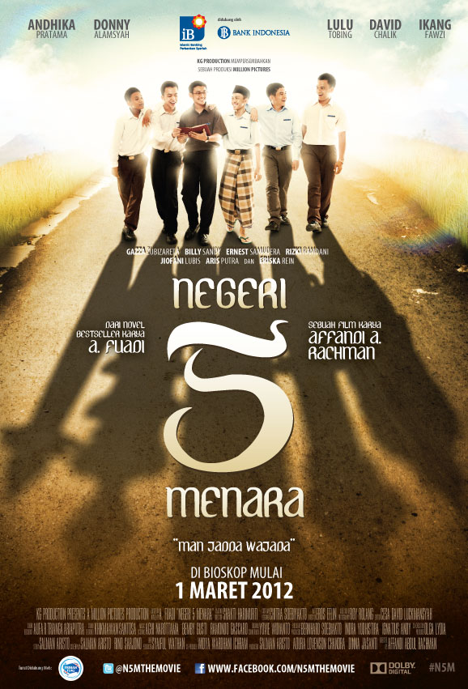

bedah buku: Negeri 5 Menara
Ditulis oleh: Ahmad Fuadi

Buku ini menceritakan perjalanan hidup Alif, seorang anak minang yang menempuh pendidikan di pondok pesantren Madani. Awalnya penuh keraguan, namun perlahan Alif menemukan makna perjuangan, persahabatan, dan kekuatan impian.
"Man Jadda Wajada - Siapa yang bersungguh-sungguh, dia akan berhasil."
Kalimat itu menjadi semangat utama dalam buku ini. Kisah yang ditulis berdasarkan pengalama nyata ini sangat menginspirasi, terutama bagi pelajar yang sedang mengejar impian mereka. Penulis berhasil menyampaikan pesan-pesan moral melalui narasi yang hidup.
Buku ini cocok dibaca oleh remaja dan orang dewasa yang sedang mencari motivasi hidup. Cerita persahabatan, perjuangan, dan cinta belajar membuatnya menyentuh dan relevan bagi pembaca di brbagai usia.
Kembali ke Katalogbedah buku : Sisi Tergelap Surga
Ditulis oleh: Brian Khrisna

Buku ini menelusuri kisah tentang bagaimana seseorang mencari kebahagiaan (surga), namun justru terjebak dalam labirin kegelapan yang ia buat sendiri atau yang dipaksakan oleh keadaan.
"Ternyata, tempat paling gelap bukanlah dasar samudera atau lubang di tengah hutan. Tempat paling gelap adalah ingatan tentang seseorang yang pernah menjadi cahayamu, namun kini memilih untuk memadamkannya."
"Seringkali kita terlalu sibuk mencari surga di luar sana, sampai lupa bahwa kita sedang menciptakan neraka di dalam diri sendiri."Kembali ke Katalog